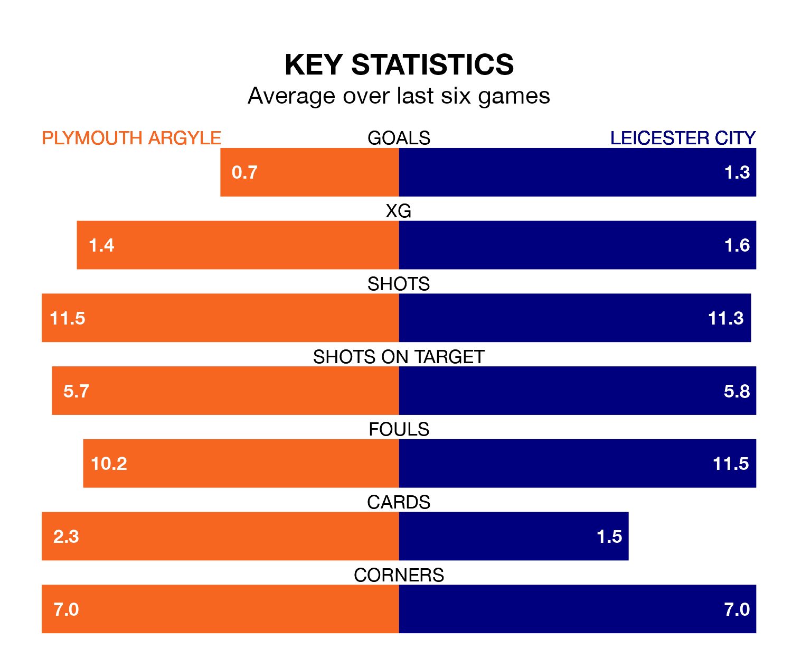

Leicester City travel to Home Park for Friday's late match against Plymouth Argyle looking to bounce back from defeat last time out in EFL Championship.
The Foxes, who sit top of the league after 41 games, fell to a 1-0 away defeat to Millwall on Tuesday.
They face a Plymouth side who secured a draw in their last match, a 1-1 tie with Queens Park Rangers, and who sit 20th in the table.
With 79 goals in 41 games so far this season, Leicester are the league's second-highest scorers with 1.9 goals per game. And they are conceding fewer than average, letting in 37 goals at a rate of 0.9 per game.
Plymouth are also above average scorers, with 1.4 goals per game, compared to a league average of 1.3. They have conceded 1.6 goals per game.
In Morgan Whittaker, Argyle have one of the league's sharpest shooters so far this season. He has notched 19 goals in 42 appearances, to sit third in the scoring charts.
His goal rate of one every 191 minutes is slightly quicker than that of Jamie Vardy, City's top scorer with a goal every 102 minutes, and a total of 14 goals in 30 games.
The Pilgrims are in disappointing form in EFL Championship, with one win and two draws from their last six games.
With three wins and a draw over that period, the Foxes' form is better – they have taken 10 points from 18, compared to the hosts' five.
Friday's match will be refereed by Robert Jones, who has taken charge of one EFL Championship game so far this season, issuing no red cards and booking nine players. He has not awarded any penalties.
He is yet to oversee a match featuring either Plymouth or Leicester this season.
Updated: 10:01 (UTC), 12/04/24